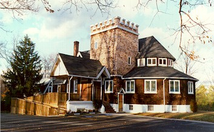
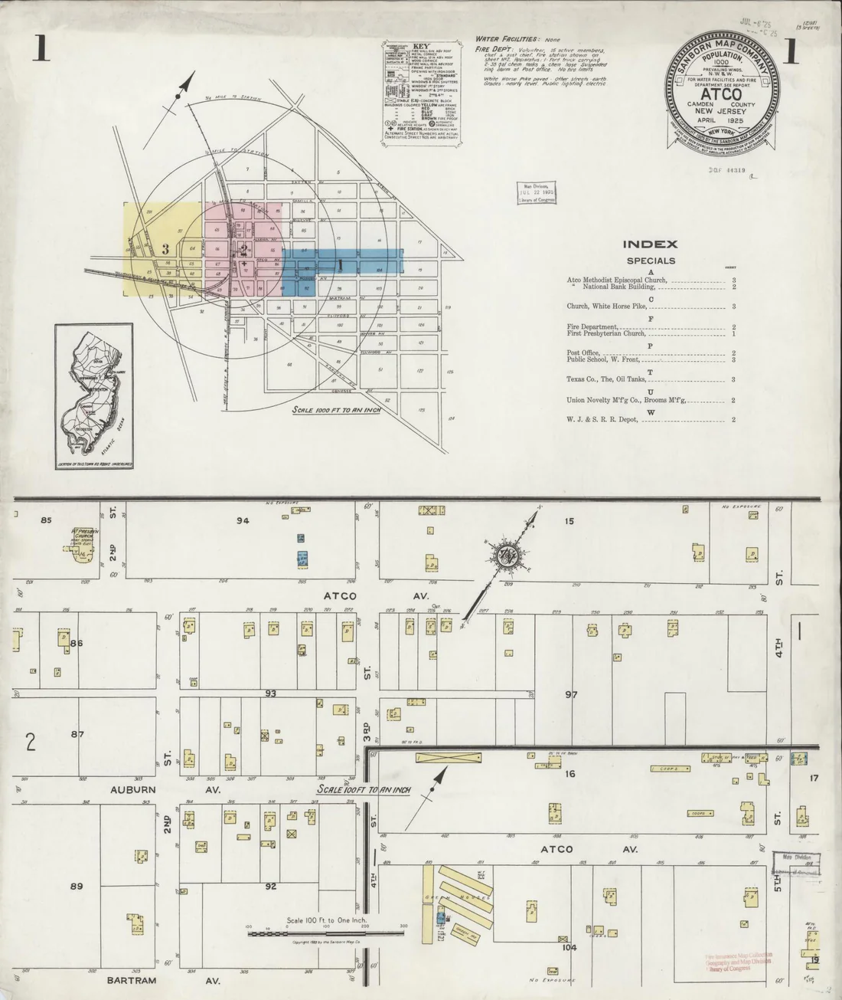

"We were ordinary people, with an extraordinary amount of talent and a determination to build a Congregation to serve Our Father in Heaven."
— Mrs. Gregory (Karen Duble) Schlachter
Sanborn Map Company, April 1925. The First Presbyterian Church is listed on Sheet 1 (Atco Ave. & Second Street), just three years after the 1922 building was dedicated. Population of Atco: 1,000. Source: Library of Congress.
